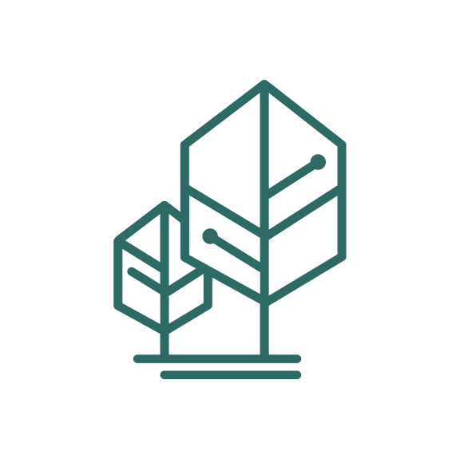
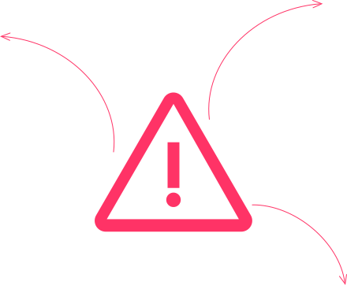
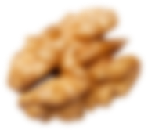
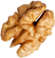
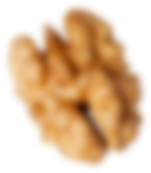
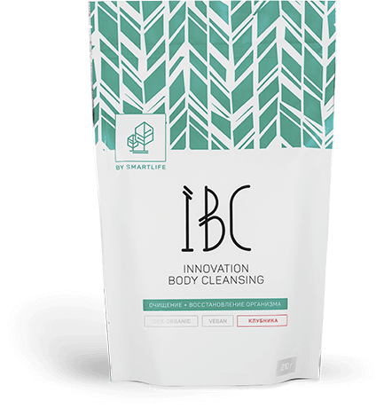
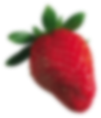
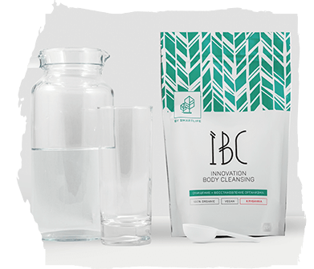
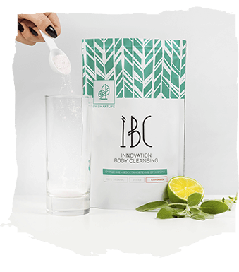
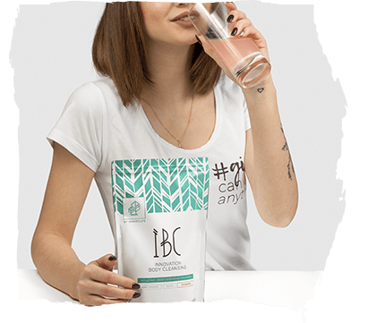

<!DOCTYPE html>
<html>

  <head>
    <meta charset="utf-8">
    <title>IBC</title>
    <meta http-equiv="X-UA-Compatible" content="IE=Edge">
    <meta name="theme-color" content="#fff">
    <meta name="format-detection" content="telephone=no">
    <link rel="stylesheet" href="https://maxcdn.bootstrapcdn.com/font-awesome/4.7.0/css/font-awesome.min.css">
    <link rel="stylesheet" media="all" href="css/app.css">
    <meta name="viewport" id="viewport" content="width=640, minimum-scale=0.3, maximum-scale=3, user-scalable=no, target-densitydpi=device-dpi">
  </head>

  <body>
    <div id="preloader">
      <div class="svg-wrapper"><svg height="150" width="150" xmlns="http://www.w3.org/2000/svg"><rect height="150" width="150" class="animate"></rect></svg>
        <div class="text"></div>
      </div>
    </div>
    <script>
      var p = document.querySelector('.animate'),
        offset = 0;
      var offsetMe = function()
      {
        if (offset < 0)
        {
          offset = 600;
        }
        p.style.strokeDashoffset = offset;
        offset = offset - 5;
        requestAnimationFrame(offsetMe);
      };
      offsetMe();

    </script>
    <div class="content-ibc">
      <!--BEGIN Главный экран-->
      <section class="head">
        <div class="container">
          <div class="head__top"><a href="index.html" class="head__top__logo"></a><a href="index.html" class="head__top__back">На главную<i class="fa fa-angle-left"></i></a></div>
          <div
            class="head__block">
            <div class="row middle-md">
              <div class="col-md-5 col-md-offset-7 col-xs-12">
                <div class="head__block__text">
                  <h2>IBC - очищение и восстановление организма</h2><span>(Innovation boby cleansing)</span>
                  <p>Концентрат IBC (сорбент нового поколения) это натуральный органический продукт, который очищает и восстанавливает наш организм, при этом не нарушая микрофлоры ЖКТ!</p><a href="checkout.html" class="btn">Заказать</a><a href="checkout.html"
                    class="btn btn--mobile"> 
заказать за <span>890</span> <svg class="icon icon-ruble "><use xlink:href="../img/sprite.svg#icon-ruble"></use></svg>/шт</a></div>
              </div>
            </div>
        </div>
        <div class="head__parallax">
          <div id="head-1" data-invert-x="false" data-invert-y="fulse" class="head__block__parallax">
            <div data-depth="0.6"></div>
          </div>
          <div id="head-2" data-invert-x="false" data-invert-y="fulse" class="head__block__parallax">
            <div data-depth="0.4" class="layer"></div>
          </div>
          <div id="head-3" data-invert-x="false" data-invert-y="false" relativeInput="true" class="head__block__parallax">
            <div data-depth="0.6" class="layer"></div>
          </div>
        </div>
    </div>
    </section>
    <!--END Главный экран-->
    <!--BEGIN  cause-->
    <section class="cause">
      <div class="cause__top">
        <div class="row middle-md">
          <div class="col-xs-12 center-xs">
            <h2>Причины накопления шлаков и таксинов в организме</h2>
          </div>
        </div>
      </div>
      <div class="container">
        <div class="cause__content">
          <div class="cause__content__left">
            <h3>Внешние</h3>
            <p>Повышенный радиационный<br> и радиомагнитный фоны;</p>
            <p>Интенсивное использование<br> синтетических лекарственных средств;</p>
            <p>Низкое качество продуктов питания<br> и высокая концентрации в них<br> химических компонентов вплоть<br>до канцерогенов;</p>
            <p>Избыточный и недостаточный<br> типы питания людей и т.д.</p>
          </div>
          <div class="cause__content__right">
            <h3>Внутренние</h3>
            <p>Хронические патологии, особенно<br> при нарушениях функций печени и почек;</p>
            <p>Неправильные обменные процессы;</p>
            <p>Интенсивные физические нагрузки<br> (ВНИМАНИЕ! ЗАНИМАЮЩИЕСЯ<br> СПОРТОМ ЛЮБОГО УРОВНЯ);</p>
            <p>Стрессы.</p>
            <h3>Симптомы
              <p>Ощущения<br> общей слабости и разбитости;<span>1</span></p>
              <p>Прогрессирующее снижение работоспособности;<span>2</span></p>
              <p>Частые головные боли и т.д.;<span>3</span></p>
            </h3>
          </div>
        </div>
        <div class="cause__content__mobile">
          <div class="tabs">
            <ul class="tabs__caption">
              <li class="active">внешние</li>
              <li>внутренние</li>
            </ul>
            <div class="tabs__content active">
              <p>Повышенный радиационный<br> и радиомагнитный фоны;</p>
              <p>Интенсивное использование<br> синтетических лекарственных средств;</p>
              <p>Низкое качество продуктов питания<br> и высокая концентрации в них<br> химических компонентов вплоть<br>до канцерогенов;</p>
              <p>Избыточный и недостаточный<br> типы питания людей и т.д.</p>
            </div>
            <div class="tabs__content">
              <p>Хронические патологии, особенно<br> при нарушениях функций печени и почек;</p>
              <p>Неправильные обменные процессы;</p>
              <p>Интенсивные физические нагрузки<br> (ВНИМАНИЕ! ЗАНИМАЮЩИЕСЯ<br> СПОРТОМ ЛЮБОГО УРОВНЯ);</p>
              <p>Стрессы.</p>
            </div>
          </div>
          <div class="cause__content__mobile__bottom">
            <h3>Симптомы</h3>
            <p>Ощущения<br> общей слабости и разбитости;<span>1</span></p>
            <p>Прогрессирующее снижение работоспособности;<span>2</span></p>
            <p>Частые головные боли и т.д.;<span>3</span></p>
          </div>
        </div>
      </div>
    </section>
    <!--END cause-->
    <!--BEGIN  better-->
    <section class="better">
      <div class="container">
        <div class="row center-sm end-xs">
          <div class="col-sm-12 col-xs-4 center-sm start-xs">
            <h2>Что улучшает IBC?</h2>
          </div>
        </div>
        <div class="better__parallax">
          <div id="better-1" data-invert-x="false" data-invert-y="fulse" class="better__block__parallax">
            <div data-depth="0.6"></div>
          </div>
          <div id="better-2" data-invert-x="false" data-invert-y="fulse" class="better__block__parallax">
            <div data-depth="0.2" class="layer"></div>
          </div>
          <div id="better-3" data-invert-x="false" data-invert-y="false" relativeInput="true" class="better__block__parallax">
            <div data-depth="0.1" class="layer"></div>
          </div>
          <div id="better-4" data-invert-x="false" data-invert-y="fulse" class="better__block__parallax">
            <div data-depth="0.3" class="layer"></div>
          </div>
          <div id="better-5" data-invert-x="false" data-invert-y="false" relativeInput="true" class="better__block__parallax">
            <div data-depth="0.6" class="layer"></div>
          </div>
        </div>
        <div class="better__content">
          <div class="better__content__left">
            <p class="top">Белковый, углеводный <br>и липидный обмен веществ;<span><i class="fa fa-check">		</i></span></p>
            <p>Белковый, углеводный <br>и липидный обмен веществ;<span><i class="fa fa-check">		</i></span></p>
            <p>Рост полезной микрофлоры <br>кишечника;<span class="mobile"><i class="fa fa-check">		</i></span></p>
            <p>Снижает уровень сахара <br>и холестирина в крови;<span><i class="fa fa-check">		</i></span></p>
            <p>Защищает от свободных радикалов <br>и нормализует окислительно-<br>восстановительные процессы <br>в организме.<span><i class="fa fa-check"></i></span></p>
          </div>
          <div class="better__content__right"><b>#IBC_УЛУЧШАЕТ</b>
            <p>Снижает риск опухолей толстой <br>кишки, снижает аппетит; <span><i class="fa fa-check"></i></span></p>
            <p class="top">Поддерживает жизнедеятельность <br>и размножение бифидо <br>лактобактерий; <span><i class="fa fa-check"></i></span></p>
            <p>Снижает систолическое <br>давление, стабилизирует <br>артериальное давление; <span><i class="fa fa-check"></i></span></p>
            <p>Снижает вирусные и <br>респираторные инфекции, <br>восстанавливает иммунитет; <span><i class="fa fa-check"></i></span></p>
          </div>
        </div>
      </div>
    </section>
    <!--END better-->
    <!--BEGIN  conclusion-->
    <section class="conclusion">
      <div class="container">
        <div class="conclusion__top">
          <h3>Состав IBC</h3><a href="#consist" class="open-modal-consist btn">читать</a></div>
        <div class="row">
          <div class="col-md-10 col-md-offset-2 col-xs-4">
            <h2>Что выводит IBC?</h2>
          </div>
          <div class="col-xs-8 end-xs conclusion__mobile"><a href="#" class="open-modal btn btn-1">читать</a></div>
          <div class="col-xs-8 conclusion__mobile"><a href="#consist" class="open-modal-consist btn">читать</a></div>
          <div class="col-xs-4 end-xs conclusion__mobile">
            <h2 class="mobile">Состав IBC?</h2>
          </div>
        </div>
        <div class="conclusion__content">
          <div class="conclusion__content__left">
            <p class="top">Различные токсины, аллергены,<br> соли тяжелых металлов;<span><i class="fa fa-check">		</i></span></p>
            <p>Радионуклиды, билирубин;<span><i class="fa fa-check">		</i></span></p>
            <p>Холестерин и липиды;<span><i class="fa fa-check">		</i></span></p>
            <p>Мочевину;<span><i class="fa fa-check">		</i></span></p>
            <p>Продукты распада алкоголя; <span><i class="fa fa-check"></i></span></p>
          </div>
          <div class="conclusion__content__right">
            <p>Метаболиты, формирующие эндогенный токсикоз;<span><i class="fa fa-check"></i></span></p>
            <p class="top top--padding">Продукты распада медикаментов, <br>канцерогены,патогенные микроорганизмы, <br>и многие другие опасные для организма <br>эндо- и экзогенные вещества <br>различной природы;<span><i class="fa fa-check"></i></span></p>
            <p>Ксенобиотики;<span><i class="fa fa-check"></i></span></p>
            <p>Аммиак.<span><i class="fa fa-check"></i></span></p><b>#IBC_ВЫВОДИТ</b></div>
        </div>
        <div class="conclusion__parallax">
          <div id="conclusion-1" data-invert-x="false" data-invert-y="fulse" class="conclusion__block__parallax">
            <div data-depth="0.6"></div>
          </div>
          <div id="conclusion-2" data-invert-x="false" data-invert-y="fulse" class="conclusion__block__parallax">
            <div data-depth="0.2" class="layer"></div>
          </div>
          <div id="conclusion-3" data-invert-x="false" data-invert-y="false" relativeInput="true" class="conclusion__block__parallax">
            <div data-depth="0.1" class="layer"></div>
          </div>
          <div id="conclusion-4" data-invert-x="false" data-invert-y="fulse" class="conclusion__block__parallax">
            <div data-depth="0.3" class="layer"></div>
          </div>
        </div>
      </div>
    </section>
    <!--END conclusion-->
    <!--BEGIN  use-->
    <section class="use">
      <div class="container">
        <div class="row">
          <div class="col-xs-12 center-xs">
            <h2>Способ применения IBC<a href="#" class="start-md">Смотреть<br>видео-инструкцию<span></span></a></h2>
          </div>
        </div>
        <div class="use__pagination"><span class="use__pagination__block use__pagination--1 active">1</span><span class="use__pagination__block use__pagination--2">2</span><span class="use__pagination__block use__pagination--3">3</span></div>
        <div class="use-swiper swiper-container">
          <p class="up">Взрослым:</p>
          <div class="swiper-wrapper">
            <div class="swiper-slide">
              <div class="use__block use__block--1">
                <div class="use__block__foto"><span>1</span></div>
                <p>Открыть пакет IBC 210 г, <br>подготовить<span> ( ¼-½ ) стакана теплой воды <br>(не менее 60oC)</span> </p>
              </div>
            </div>
            <div class="swiper-slide">
              <div class="use__block">
                <div class="use__block__foto use__block__foto--span"><span>2</span></div>
                <p>Для приготовления<br> одной порции необходимо 20 гр концентрата перемешать<br> в <span>( ¼-½ ) стакана теплой воды (не менее 60oC)</span> </p>
              </div>
            </div>
            <div class="swiper-slide">
              <div class="use__block">
                <div class="use__block__foto"><span>3</span></div>
                <p>Готово к применению</p>
              </div>
            </div>
          </div>
        </div><a href="#" class="mobile">Смотреть<br>видео-инструкцию<span></span></a>
        <div class="row">
          <div class="col-xs-12">
            <div class="use__advice">
              <p><b>Рекомендуется:</b> принимать за 20-30 минут до еды один раз в день. При интоксикации организма прием можно увеличить до 2-3 раз в день.</p>
            </div>
          </div>
          <div class="col-xs-12">
            <div class="use__recommendation">
              <div class="use__recommendation__block">
                <p>Доза для детей:</p>
                <p>½ - 1 мерная ложка (5-10 мл) в сутки</p>
              </div>
              <div class="use__recommendation__block use__recommendation__block--last">
                <p>Противопоказания:</p>
                <p>Индивидуальная непереносимость компонентов продукта.</p>
              </div>
            </div>
          </div>
        </div>
      </div>
    </section>
    <!--END use-->
    <section class="order">
      <div class="container">
        <div class="row start-sm center-xs">
          <div class="col-md-5 middle-md col-xs-10">
            <h2>НЕ УПУСТИ ВОЗМОЖНОСТЬ, ПОПРОБУЙ И ОЩУТИ ИЗМЕНЕНИЯ<br> ЗА 2 НЕДЕЛИ </h2>
            <div class="order__block"><span>-30%</span>
              <p>со скидкой</p>
            </div><a href="checkout.html" class="btn">попробовать</a></div>
        </div>
      </div>
    </section>
    <footer class="footer">
      <div class="container">
        <div class="row">
          <div class="col-xs-6">
            <p>© 2017 Smartlifebio</p>
          </div>
          <div class="col-xs-6 end-xs"><a href="https://excv.ru/?utm_sourse=smartlife.bio"></a></div>
        </div>
      </div>
    </footer>
    <div class="conclusion__consist"><a href="index.html" class="head__top__logo"></a>
      <div class="btn-close"><span></span></div>
      <div class="conclusion__consist__block">
        <div class="row">
          <div class="col-xs-7 col-xs-offset-3">
            <h2>Состав IBC</h2>
            <h4>Диоксид кремния<span></span>
              <div class="conclusion__hidden">
                <p>Диоксид кремния (silicon dioxid или кремнезём) является важнейшим компонентом очистительного комплекса. Уникальная технология позволяет получить из обыкновенного кварцевого песка тонкодисперсный белый порошок (так называемую «белую сажу»).
                  При взаимодействии с внутренней водой частицы порошка присоединяют к себе многочисленные гидроксильные группы. За счёт этого формируется сложная гелеобразная пространственная структура, имеющая огромное значение для проявления очистительных
                  свойств диоксида кремния. Именно гидроксильные группы на поверхности частиц связывают, или сорбируют, различные токсины, аллергены, микроорганизмы и агрессивные продукты обмена веществ. </p>
                <p>Доказано, что диоксид кремния, выполнивший функцию энтеросорбента, проходит через желудочно-кишечный тракт, не изменяя своей структуры, и полностью выводится из организма, заодно унося связавшимися с ним вещества. Порошок, благодаря гигантской
                  площади своей пористой поверхности, которая достигает нескольких квадратных метров в одном грамме, имеет огромную ёмкость связывания. Частицы диоксида кремния проявляют свою сорбционную активность по отношению к солям тяжелых металлов,
                  радионуклидам, аллергенам, билирубину, холестерину, мочевине, продуктам распада алкоголя, метаболитам, формирующим эндогенный токсикоз, продуктам распада медикаментов, канцерогенам и многим другим опасным для организма эндо- и экзогенным
                  веществам различной природы. Связываются им также и патогенные микроорганизмы. Очень важно, что нормальная микрофлора (молочнокислые и кишечные палочки, бифидумбактерии и другие) не сорбируется коллоидными частицами и остаётся в кишечнике.</p>
              </div>
            </h4>
            <h4>Волокна растительные нерастворимые (растительная клетчатка)<span></span>
              <div class="conclusion__hidden">
                <p>Диоксид кремния (silicon dioxid или кремнезём) является важнейшим компонентом очистительного комплекса. Уникальная технология позволяет получить из обыкновенного кварцевого песка тонкодисперсный белый порошок (так называемую «белую сажу»).
                  При взаимодействии с внутренней водой частицы порошка присоединяют к себе многочисленные гидроксильные группы. За счёт этого формируется сложная гелеобразная пространственная структура, имеющая огромное значение для проявления очистительных
                  свойств диоксида кремния. Именно гидроксильные группы на поверхности частиц связывают, или сорбируют, различные токсины, аллергены, микроорганизмы и агрессивные продукты обмена веществ. </p>
                <p>Доказано, что диоксид кремния, выполнивший функцию энтеросорбента, проходит через желудочно-кишечный тракт, не изменяя своей структуры, и полностью выводится из организма, заодно унося связавшимися с ним вещества. Порошок, благодаря гигантской
                  площади своей пористой поверхности, которая достигает нескольких квадратных метров в одном грамме, имеет огромную ёмкость связывания. Частицы диоксида кремния проявляют свою сорбционную активность по отношению к солям тяжелых металлов,
                  радионуклидам, аллергенам, билирубину, холестерину, мочевине, продуктам распада алкоголя, метаболитам, формирующим эндогенный токсикоз, продуктам распада медикаментов, канцерогенам и многим другим опасным для организма эндо- и экзогенным
                  веществам различной природы. Связываются им также и патогенные микроорганизмы. Очень важно, что нормальная микрофлора (молочнокислые и кишечные палочки, бифидумбактерии и другие) не сорбируется коллоидными частицами и остаётся в кишечнике.</p>
              </div>
            </h4>
            <h4>Волокна растительные растворимые (инулин, пектин).<span></span>
              <div class="conclusion__hidden">
                <p>Диоксид кремния (silicon dioxid или кремнезём) является важнейшим компонентом очистительного комплекса. Уникальная технология позволяет получить из обыкновенного кварцевого песка тонкодисперсный белый порошок (так называемую «белую сажу»).
                  При взаимодействии с внутренней водой частицы порошка присоединяют к себе многочисленные гидроксильные группы. За счёт этого формируется сложная гелеобразная пространственная структура, имеющая огромное значение для проявления очистительных
                  свойств диоксида кремния. Именно гидроксильные группы на поверхности частиц связывают, или сорбируют, различные токсины, аллергены, микроорганизмы и агрессивные продукты обмена веществ. </p>
                <p>Доказано, что диоксид кремния, выполнивший функцию энтеросорбента, проходит через желудочно-кишечный тракт, не изменяя своей структуры, и полностью выводится из организма, заодно унося связавшимися с ним вещества. Порошок, благодаря гигантской
                  площади своей пористой поверхности, которая достигает нескольких квадратных метров в одном грамме, имеет огромную ёмкость связывания. Частицы диоксида кремния проявляют свою сорбционную активность по отношению к солям тяжелых металлов,
                  радионуклидам, аллергенам, билирубину, холестерину, мочевине, продуктам распада алкоголя, метаболитам, формирующим эндогенный токсикоз, продуктам распада медикаментов, канцерогенам и многим другим опасным для организма эндо- и экзогенным
                  веществам различной природы. Связываются им также и патогенные микроорганизмы. Очень важно, что нормальная микрофлора (молочнокислые и кишечные палочки, бифидумбактерии и другие) не сорбируется коллоидными частицами и остаётся в кишечнике.</p>
              </div>
            </h4>
            <h4>Янтарная кислота <span></span>
              <div class="conclusion__hidden">
                <p>Диоксид кремния (silicon dioxid или кремнезём) является важнейшим компонентом очистительного комплекса. Уникальная технология позволяет получить из обыкновенного кварцевого песка тонкодисперсный белый порошок (так называемую «белую сажу»).
                  При взаимодействии с внутренней водой частицы порошка присоединяют к себе многочисленные гидроксильные группы. За счёт этого формируется сложная гелеобразная пространственная структура, имеющая огромное значение для проявления очистительных
                  свойств диоксида кремния. Именно гидроксильные группы на поверхности частиц связывают, или сорбируют, различные токсины, аллергены, микроорганизмы и агрессивные продукты обмена веществ. </p>
                <p>Доказано, что диоксид кремния, выполнивший функцию энтеросорбента, проходит через желудочно-кишечный тракт, не изменяя своей структуры, и полностью выводится из организма, заодно унося связавшимися с ним вещества. Порошок, благодаря гигантской
                  площади своей пористой поверхности, которая достигает нескольких квадратных метров в одном грамме, имеет огромную ёмкость связывания. Частицы диоксида кремния проявляют свою сорбционную активность по отношению к солям тяжелых металлов,
                  радионуклидам, аллергенам, билирубину, холестерину, мочевине, продуктам распада алкоголя, метаболитам, формирующим эндогенный токсикоз, продуктам распада медикаментов, канцерогенам и многим другим опасным для организма эндо- и экзогенным
                  веществам различной природы. Связываются им также и патогенные микроорганизмы. Очень важно, что нормальная микрофлора (молочнокислые и кишечные палочки, бифидумбактерии и другие) не сорбируется коллоидными частицами и остаётся в кишечнике.</p>
              </div>
            </h4>
          </div>
        </div>
      </div>
    </div>
    <div class="pop-up"><a href="index.html" class="head__top__logo"></a>
      <div class="pop-up__block">
        <div class="btn-close"><span></span></div>
        <div class="row center-xs">
          <div class="col-xs-9">
            <h2>А ты знаешь свою реакцию?</h2>
            <h2>Проверь бесплатно на online-тренажоре</h2>
            <p>займет не более 1 минуты</p><a href="#" class="btn__left">Да, хочу</a><a href="#" class="btn__right">Нет, спасибо</a></div>
        </div>
      </div>
    </div>
    <div class="pop-up-3"><a href="index.html" class="head__top__logo"></a>
      <div class="pop-up-3__block">
        <form class="form">
          <div class="row center-xs">
            <div class="col-xs-10">
              <p>Результат теста придет на Ваш e-mail в течении 5 минут</p>
            </div>
            <div class="col-xs-12"><input type="text" name="name" placeholder="Введите Ваше имя "><input type="tel" name="phone" placeholder="Телефон"><input type="email" name="E-mail" placeholder="E-mail"><input type="submit" value="получить бесплатно" class="submit"></div>
          </div>
        </form>
        <div class="pop-up-3__block__result">
          <div class="row center-xs">
            <div class="col-xs-12">
              <p>Спасибо, в течении 5 минут<br> результаты придут Вам на e-mail</p>
            </div>
            <div class="col-xs-12"><input type="submit" value="на главную" class="submit__home"></div>
          </div>
        </div>
      </div>
    </div>
    </div>
    <!--LOAD SCRIPTS-->
    <script src="https://cdn.jsdelivr.net/npm/vue"></script>
    <script src="https://cdnjs.cloudflare.com/ajax/libs/jquery/1.9.1/jquery.min.js"></script>
    <script src="https://cdnjs.cloudflare.com/ajax/libs/wow/1.1.2/wow.min.js"></script>
    <script type="text/javascript" src="js/app.js"></script>
  </body>

</html>
